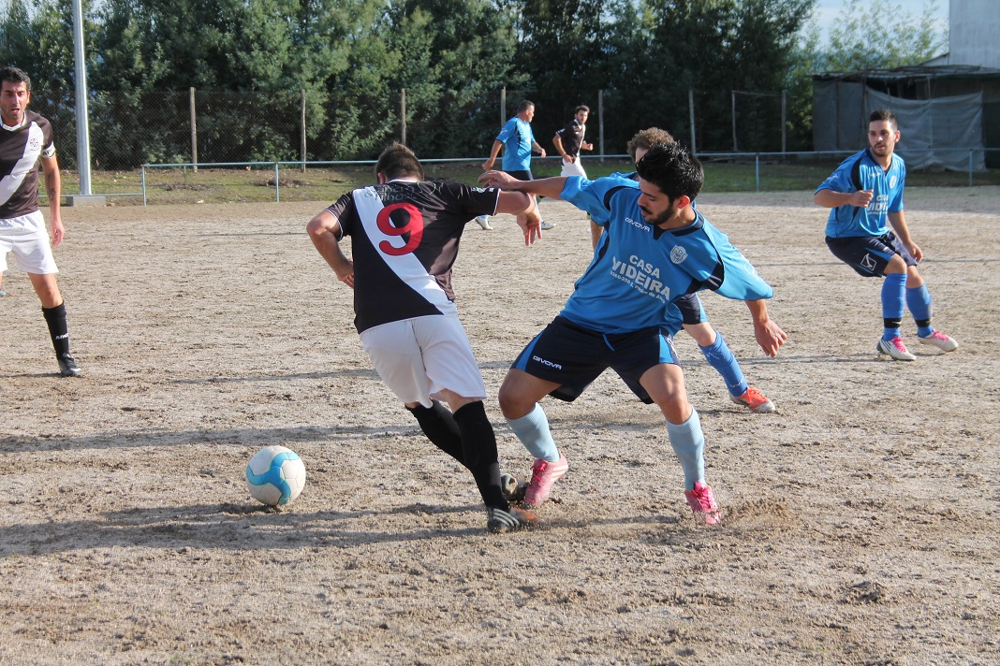

O setor económico e o futebol
Apesar do setor desportivo em Portugal ser dominado apenas por um desporto (o futebol), este ainda contribui significativamente para a economia portuguesa e representa ser um setor importante desta. Para além disso, apesar dos outros desportos não terem tanto impacto na economia portuguesa na escala nacional geral, apresentam relevância a nível local.

Impacto do desporto na economia a nível nacional
De acordo com os dados do Instituto Nacional de Estatística:
- As 25000 entidades pertencentes ao setor desportivo produziram cerca de 1,8 mil milhões de euros por ano entre 2010 e 2012, que representa 1,2% do VAB e 1,4% do emprego.
- Um quarto do VAB do desporto é gerado pelas entidades de Administra- ção Pública relacionadas com desporto, sendo apenas 68. Estas empregam 12,3 mil pessoas.
- Para além disso existem também entidades que estão relacionadas com o setor desportivo, por exemplo empresas que produzem bens e serviços desportivos, e que representam mais de metade da riqueza e do emprego do setor.
O estudo compara também o VAB do desporto com o VAB da fabricação de produtos metálicos que também tem o valor de 1,2%. Este valor é superior, por exemplo, ao VAB da consultoria e programação informática (1,0%) e ao da indústria de vestuário (0,9%).
Impacto do desporto a nível regional
O desporto e, por associação, os eventos desportivos são uma mais valia no que toca à economia local e regional. Este é um facto que se vê facilmente hoje em dia, uma vez que vêmos imensas informações acerca de eventos desportivos que vão ocorrer perto do nossa área.
Muitos destes eventos são até gratuitos para os participantes. No entanto, a a movimentação de pessoas acaba por gerar uma circulação monetária que faz com que a região lucre do evento e acaba por chamar a atenção de outras organizações para que organizem também eventos no futuro nesta localidade.